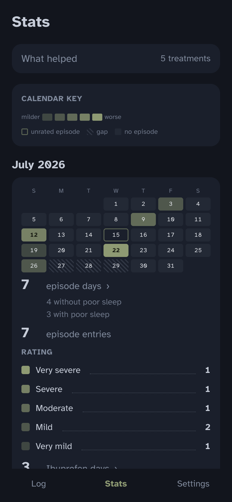
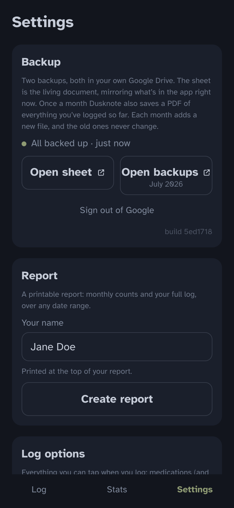
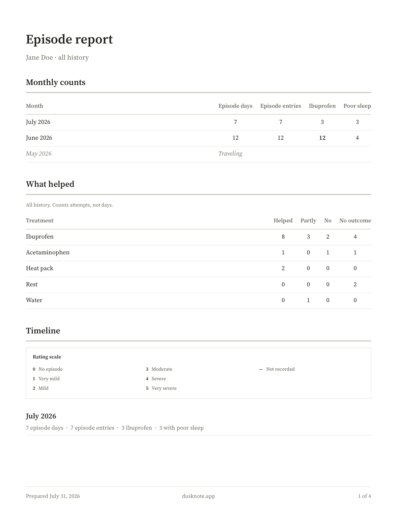

Your health notes, on your phone, yours forever.
Dusknote is a free forever (no upsells), open-source tracker for any chronic health condition. Entries live on your device, back up to a Google Sheet in your own Drive, and export as a report you can share with anyone you choose.

Why this exists
Dusknote exists because I lost a few years of health data to a failed phone backup of a notes app. When I went to replace it with an app built for health tracking, I kept finding that they all charged for basic features and would keep my own health information behind their subscription. I built the tracker I actually wanted: one where the data is easy to track, read, and export as a report, readable in a plain spreadsheet and PDFs as a backup, and owned by no one but you.
How it works
Entries save to your phone.
It lives in your own Drive. Open it, sort it, export it, with or without the app. Once a month Dusknote also saves a PDF of everything tracked to date to your Google Drive automatically, as a second form of backup.
No account to create, no company in the middle, nothing that can shut down or start charging you for your own history later. Your copy talks only to your own Google Drive.
Your data always stays only with your accounts and your device. The app's one outside contact is asking GitHub whether a newer version exists, and that check carries nothing about you.
Dusknote ships condition-neutral, and is easy to customize and edit within the app to make it truly reflect your condition: your vocabulary, your rating words, your name for the condition you track.
The screen is dark and low on glare, with a big button on the main screen to log an entry. Reaching for it during a 3am episode is quick, and easy on the eyes.
What it looks like
Shown with invented sample data.




Set it up
You will create your own copy, and you will need to use three free accounts (GitHub, Vercel, Google). It should take about an hour to set up, and you can complete it with either an AI assistant walking you through every step or manually on your own; the setup guide explains how to do both.
Read the setup guideDusknote is free and always will be. If it's been useful and you're able, a tip helps me keep maintaining and improving it.